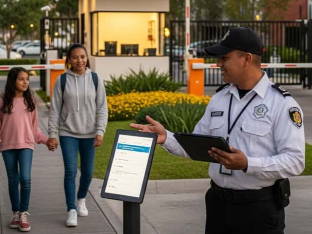
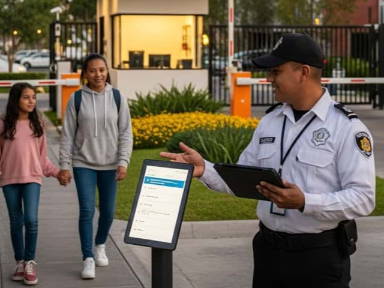

En Este Articulo
Cuando un comite de administracion evalua opciones de seguridad privada, el error mas comun es enfocarse unicamente en el monto mensual sin analizar los componentes que justifican esa inversion. Un servicio aparentemente economico puede resultar extremadamente costoso cuando falla, mientras que una inversion bien estructurada genera valor tangible en proteccion patrimonial, tranquilidad residencial y plusvalia del inmueble.
Factores que Determinan la Inversion en Seguridad
La inversion requerida para proteger un condominio no es arbitraria. Depende de variables especificas que determinan la complejidad operativa y los recursos necesarios para garantizar una proteccion efectiva.
Condominios Subprotegidos
Segun analisis del sector, la mayoria de los condominios en zonas premium tienen esquemas de seguridad insuficientes para su nivel de exposicion al riesgo, generalmente por decisiones basadas solo en precio.
1. Numero y Tipo de Accesos
Cada punto de entrada requiere control, ya sea mediante personal dedicado o tecnologia. Un condominio con un solo acceso vehicular tiene necesidades muy diferentes a uno con multiples entradas peatonales, vehiculares y de servicio.
- Acceso unico: Concentra recursos en un punto, simplifica operacion
- Multiples accesos: Requiere coordinacion, mas personal o tecnologia avanzada
- Accesos de servicio: Demandan protocolos especiales y verificacion adicional
2. Extension del Perimetro
Condominios horizontales con bardas perimetrales extensas requieren mas puntos de vigilancia CCTV, rondines regulares y potencialmente patrullaje vehicular. El perimetro define la cantidad de tecnologia y frecuencia de supervision necesaria.
Evaluacion Perimetral
Un analisis profesional de vulnerabilidades perimetrales identifica los puntos criticos que requieren mayor atencion, optimizando la distribucion de recursos en lugar de cubrir todo por igual.
3. Volumen de Trafico Diario
La cantidad de personas, vehiculos y paqueteria que ingresan diariamente determina la carga operativa. Condominios con alto flujo de visitantes, servicios de delivery y proveedores requieren procesos de registro mas robustos.
4. Nivel de Tecnologia Requerido
Desde sistemas basicos de videovigilancia hasta plataformas integradas con analitica de inteligencia artificial, el nivel tecnologico impacta tanto la inversion inicial como los costos operativos de mantenimiento y actualizacion.
5. Horarios de Cobertura
Cobertura 24/7 versus horarios parciales representa una diferencia significativa en recursos. Algunos condominios optimizan con cobertura completa nocturna y parcial diurna, segun sus patrones de riesgo.
6. Perfil de Riesgo de la Zona
La ubicacion geografica y el historial de incidentes en la zona influyen en la intensidad de proteccion necesaria. Zonas de mayor incidencia requieren protocolos mas estrictos y recursos adicionales.
No Subestimes el Contexto
Un condominio en zona de baja incidencia puede requerir menor inversion, pero un solo evento grave puede representar perdidas que superan anos de ahorro mal entendido. El analisis de riesgo profesional es fundamental.
Componentes de un Servicio Profesional de Seguridad
Entender que incluye un servicio profesional permite comparar propuestas de manera informada. Una cotizacion seria desglosa cada componente; una sospechosa presenta solo un monto global sin detalle.
Componentes de Inversion en Seguridad
Personal Certificado
Guardias con certificacion SSC vigente, exámenes medicos, psicologicos y toxicologicos, prestaciones de ley completas y verificacion de antecedentes
Supervision y Control
Supervisores de campo, auditorias de servicio, bitacoras digitales, sistemas de rastreo y control de asistencia en tiempo real
Tecnologia y Equipamiento
CCTV profesional, control de accesos, radios de comunicacion, aplicaciones de reportes y mantenimiento preventivo incluido
Respaldo y Garantias
Polizas de responsabilidad civil, personal de respaldo ante ausencias, protocolos de emergencia y soporte continuo
Personal: La Base de Todo Servicio
El componente humano representa la mayor parte de la inversion en seguridad. Personal profesional incluye:
- Certificacion SSC vigente: Proceso que incluye capacitacion, examenes y verificaciones
- Prestaciones de ley: IMSS, vacaciones, aguinaldo, prima vacacional
- Capacitacion continua: Actualizaciones en protocolos, emergencias, atencion al cliente
- Uniformes y equipamiento: Presentacion profesional y herramientas de trabajo
Senales de Alerta en Cotizaciones
Desconfia de propuestas con montos significativamente menores al mercado. Generalmente implican personal sin certificacion, esquemas informales sin prestaciones, o ausencia de supervision real. El "ahorro" se convierte en riesgo legal y operativo.
Tecnologia: Multiplicador de Efectividad
La tecnologia no reemplaza al personal, pero multiplica su efectividad. Un guardia apoyado por CCTV inteligente, control de accesos y comunicacion integrada es significativamente mas efectivo que uno operando sin herramientas.
Supervision: Garantia de Calidad
Un guardia sin supervision tiende al minimo esfuerzo. Los sistemas de control de calidad profesionales incluyen visitas sorpresa, auditorias de bitacora, rastreo GPS y evaluacion continua de desempeno.
Cotizacion Personalizada Sin Compromiso
Analizamos las necesidades especificas de tu condominio y te presentamos opciones transparentes con desglose detallado de cada componente de inversion
Solicitar Cotizacion PersonalizadaModelos de Servicio: Basico, Intermedio y Premium
Los servicios profesionales de seguridad se estructuran en niveles que corresponden a diferentes necesidades y alcances de proteccion. Entender cada modelo permite elegir el adecuado para tu condominio.
Comparativa de Modelos de Servicio
| Componente | Basico | Intermedio | Premium |
|---|---|---|---|
| Personal | Cobertura en acceso principal | Multiples posiciones coordinadas | Cobertura completa + especialistas |
| CCTV | Puntos criticos esenciales | Cobertura perimetral completa | Analitica IA + monitoreo remoto 24/7 |
| Control Accesos | Registro manual digitalizado | RFID + registro fotografico | Biometria + reconocimiento vehicular |
| Supervision | Visitas programadas periodicas | Supervisor dedicado con auditorias | Control 24/7 + metricas en tiempo real |
| Respaldo | Personal sustituto ante ausencias | Equipo de respaldo + protocolos | Redundancia total + centro de control |
| Ideal Para | Condominios pequenos, bajo trafico | Condominios medianos, trafico moderado | Condominios premium, alto valor |
Modelo Basico: Proteccion Esencial
Adecuado para condominios pequenos con un solo acceso y bajo volumen de visitantes. Proporciona la base minima de proteccion profesional con personal certificado y tecnologia esencial.
Modelo Intermedio: Proteccion Equilibrada
El mas solicitado para condominios de tamano medio. Combina personal suficiente para multiples posiciones con tecnologia que complementa la vigilancia humana y supervision que garantiza calidad consistente.
Modelo Premium: Proteccion Integral
Disenado para condominios de alto valor donde la seguridad es prioridad maxima. Integra lo mejor en personal especializado, tecnologia de vanguardia y sistemas de control que no dejan nada al azar.
Evolucion Gradual
Muchos condominios inician con modelo basico y evolucionan gradualmente. Un proveedor profesional disenara un plan de crecimiento que permita escalar la proteccion conforme el presupuesto y las necesidades lo permitan.
ROI: El Verdadero Valor de la Seguridad Profesional
La seguridad no genera ingresos directos, pero su valor se mide en perdidas evitadas y beneficios tangibles que superan con creces la inversion realizada.
Costo de un Incidente vs Prevencion
Un solo evento grave (robo mayor, demanda laboral, incidente con lesiones) puede representar entre 5 y 10 veces la inversion anual en seguridad profesional que lo habria prevenido.
Perdidas Evitadas
- Robos y danos: Perdida patrimonial directa que la seguridad profesional previene
- Demandas laborales: Contratar guardias informales expone al condominio a litigios costosos
- Responsabilidad civil: Incidentes sin cobertura de seguro por personal no certificado
- Multas y sanciones: Operar con seguridad no regulada tiene consecuencias legales
Valor Agregado
- Plusvalia del inmueble: Condominios con seguridad profesional mantienen y aumentan su valor
- Retencion de residentes: La seguridad es factor decisivo para permanencia de inquilinos
- Atraccion de nuevos residentes: Diferenciador competitivo en el mercado inmobiliario
- Tranquilidad comunitaria: Valor intangible pero fundamental para calidad de vida
El Costo de No Invertir
Los condominios que recortan en seguridad para reducir cuotas frecuentemente enfrentan perdidas que superan con creces lo "ahorrado". La pregunta no es cuanto cuesta la seguridad, sino cuanto cuesta no tenerla.
Como Optimizar tu Inversion en Seguridad
Optimizar no significa recortar. Significa distribuir recursos de manera inteligente para maximizar la proteccion efectiva dentro del presupuesto disponible.
Estrategias de Optimizacion Recomendadas
1. Implementacion por Fases
No es necesario implementar todo simultaneamente. Una estrategia por fases permite comenzar con lo critico y expandir gradualmente:
- Fase inicial: Personal certificado en accesos + CCTV en puntos criticos
- Fase de consolidacion: Control de accesos inteligente + cobertura CCTV completa
- Fase de maduracion: Tecnologia avanzada + servicios premium personalizados
2. Esquemas Hibridos
Combinar personal estrategicamente ubicado con tecnologia que extiende su alcance. Un guardia apoyado por CCTV con analitica puede cubrir efectivamente areas que tradicionalmente requerían multiples posiciones.
3. Contratos de Largo Plazo
Compromisos anuales con proveedores profesionales generalmente incluyen condiciones mas favorables que arreglos mes a mes, ademas de garantizar estabilidad en el servicio.
4. Negociacion Conjunta
Si tu condominio forma parte de un desarrollo con multiples fases o torres, negociar contratos conjuntos genera economías de escala beneficiosas para todos.
Lo Que Nunca Debes Recortar
Nunca sacrifiques: certificacion SSC del personal, polizas de responsabilidad civil, supervision profesional, ni mantenimiento de tecnología. Estos elementos son la base de una operacion segura y legal.
Componentes de Seguridad Profesional para Condominios
 

Conclusion: Invertir en Seguridad es Proteger tu Patrimonio
La seguridad profesional para condominios no debe evaluarse como un gasto a minimizar, sino como una inversion estrategica en la proteccion del patrimonio de todos los residentes. Los factores que determinan la inversion son objetivos y medibles; lo que varia es como cada proveedor estructura su propuesta de valor.
Un servicio profesional se distingue por transparencia en sus componentes, cumplimiento legal absoluto, tecnología que complementa al personal, y sistemas de control que garantizan calidad consistente. La diferencia entre un proveedor profesional y uno improvisado no siempre es evidente en el monto mensual, pero se hace dramaticamente clara cuando se necesita respuesta ante un incidente.
La pregunta correcta no es "cuanto cuesta la seguridad" sino "que valor recibo por mi inversion". Un analisis profesional de las necesidades de tu condominio te permitira tomar una decision informada que proteja tanto tu patrimonio como tu tranquilidad.
Preguntas Frecuentes
Los factores principales son: numero de accesos vehiculares y peatonales, extension del perimetro, volumen de trafico diario, nivel de tecnología requerido, horarios de cobertura y perfil de riesgo de la zona. Un analisis profesional evalua cada factor para dimensionar correctamente los recursos necesarios sin sobredimensionar ni subdimensionar la proteccion.
Un servicio profesional completo incluye: personal con certificacion SSC vigente y prestaciones de ley, supervision continua con auditorias, polizas de responsabilidad civil, tecnología de monitoreo y control, capacitacion permanente, sistemas de control de calidad, personal de respaldo ante contingencias y soporte administrativo continuo.
El retorno de inversion se mide por: prevencion de perdidas directas (robos, danos, demandas laborales), cumplimiento legal que evita multas y responsabilidades, incremento en plusvalia del inmueble, reduccion de rotacion de residentes, atraccion de nuevos inquilinos, y el valor intangible de la tranquilidad comunitaria.
El nivel basico proporciona vigilancia en puntos criticos con CCTV esencial, ideal para condominios pequenos. El intermedio agrega control de accesos inteligente, cobertura CCTV completa y supervision reforzada para condominios medianos. El premium incorpora tecnologia avanzada con analitica IA, cobertura total, especialistas y servicios personalizados para condominios de alto valor.
Las estrategias recomendadas incluyen: implementacion por fases priorizando lo critico, esquemas hibridos que combinan personal con tecnología, contratos de largo plazo con mejores condiciones, y negociacion conjunta si formas parte de un desarrollo mayor. Lo que nunca debe sacrificarse es la certificacion del personal, polizas de seguro y supervision profesional.
Conoce tu Inversion Ideal en Seguridad
Mas de 15 anos protegiendo condominios premium en CDMX. Te presentamos un analisis profesional con opciones transparentes y desglose completo de cada componente para que tomes la mejor decision para tu comunidad.
Cotizacion Personalizada Sin Compromiso